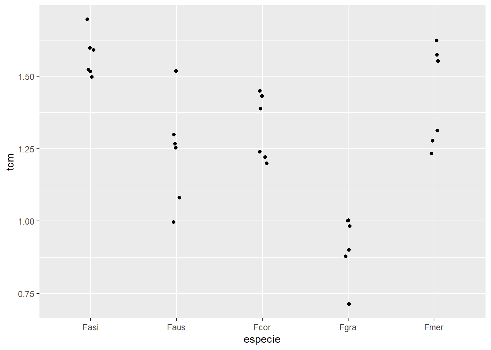
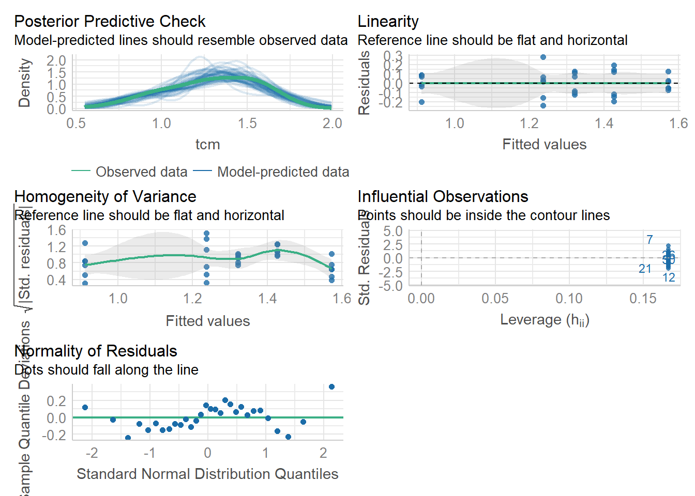
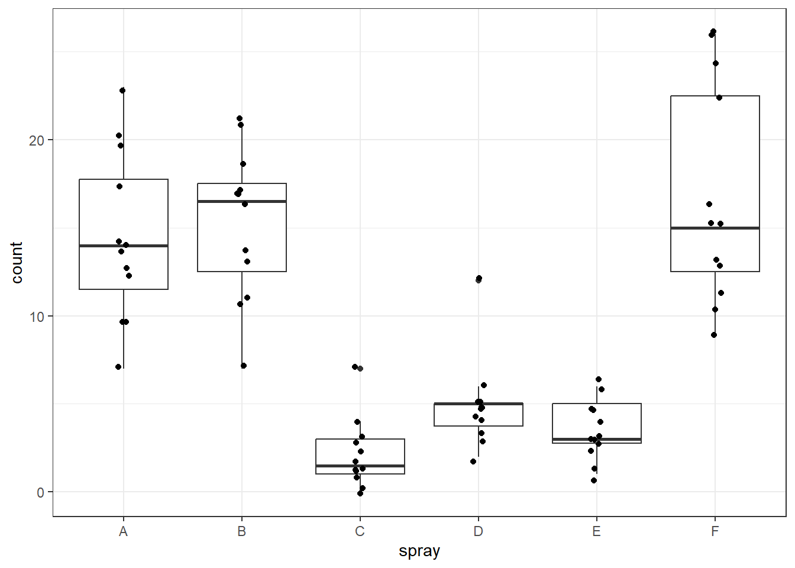
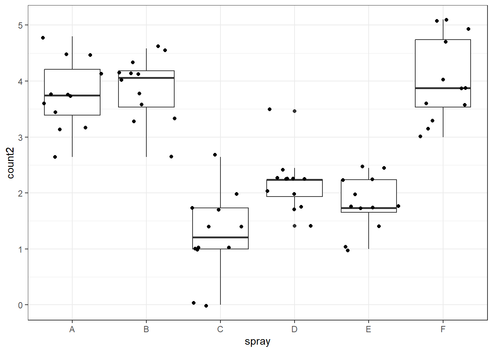

library(tidyverse)
library(gsheet)
library(multcomp)
library(multcompView)Estatística inferencial: ANOVA e teste de médias
Durante a aula 6, utilizando a estatística inferencial. O $ é utilizado para puxar o dado de uma coluna dentro do conjunto de dados; já o ~ utiliza um fator em função do outro.
Pacotes carregados
Importando dados
#Importar pacotes
mg <- gsheet2tbl("https://docs.google.com/spreadsheets/d/1bq2N19DcZdtax2fQW9OHSGMR0X2__Z9T/edit#gid=983033137")Para dois grupos diferentes (independentes)
Para esse conjunto de dados, temos um fator com dois níveis: com e sem magnésio (Mg). Observamos que o magnésio tem um efeito redutor no tamanho da lesão, indicando que a aplicação de Mg está induzindo uma reação de resistência. O tamanho da lesão é maior no tratamento controle. Para publicar este trabalho, é necessário testar a hipótese de que “a suplementação de magnésio reduz o tamanho da doença” (hipótese experimental), enquanto a hipótese nula afirma que as médias não diferem (hipótese estatística). No gráfico, vemos um boxplot simétrico com uma diferença clara entre as medianas, sugerindo a possibilidade de uma diferença significativa. A simetria do boxplot já indica uma possível normalidade dos dados, o que facilita a visualização.
#vizualização
mg |>
ggplot(aes(trat, comp))+
geom_boxplot()
#demonstra o efeito da suplementação de magnesio que induz a resistencia, visando testar uma hipotese cientifica é que com a suplementação induz a resistencia
#a hipotese nula é que o valor das populações são iguais. Teste T, usado para dois grupos independentes, primeiro existe se existe uma normalidade, dendencia ou independencia e se as variancias são homogeneas. (teste T não pareado), quem inventou o test t? student
Para verificar se há diferença ou não, utilizaremos o teste t, que é um teste simples geralmente usado para comparar dois grupos. Se houver mais de dois grupos, seria necessário fazer comparações par a par. Assumimos a normalidade dos dados e a homogeneidade das variâncias, pois temos um número pequeno de tratamentos. No experimento, 10 plantas receberam um tratamento e 10 plantas receberam outro, o que as torna variáveis independentes.
#teste T
#longo para o largo (ver o formato antes tem que larogo)
mg2 <- mg |>
pivot_wider(names_from = trat,
values_from = comp)
teste1 <- t.test(mg2$Mg2, mg2$control, )
#interpretação: o teste T - ligado ao erro padrão, a probabilidade é pequena pelo fato do p valor ter dado p-value = 2.423e-07 que nesse caso é menor que 0.5 rejeitando a hipotese nula. conclunido que o teste t esta correto. o intervalo de confiança é a diferença verdadeira entre as médias, dado pela ordem de montagem do teste. Verificação das premissas
#testar a normalidade
shapiro.test(mg2$control)
Shapiro-Wilk normality test
data: mg2$control
W = 0.93886, p-value = 0.5404#testar a normalidade hipotese nula, dizendo que a distribuição é normal, maior que 0.5 normalidade.
hist(mg2$control)
#faz-se o histograma para saber se é normal Histogramas: Uma forma de se avaliar a normalidade visualmente.
A avaliação também pode ser feita utilizando testes estatísticos. Nesse caso, será aplicada uma função nativa do R que é o shapiro.test:
#testar a normalidade para mg
shapiro.test(mg2$Mg2)
Shapiro-Wilk normality test
data: mg2$Mg2
W = 0.97269, p-value = 0.9146#demosnta uma distribuição normal acima de 0.5
hist(mg2$Mg2)
#os dados possuem distribuição normal. Os histogramas possuem formato típico de um conjunto de dados normais. Nos Q-Q Plots, é possível notar que os pontos estão próximo a linha de normalidade. E pelos testes de Shapiro Wilk, não se rejeita a hipótese nula (de normalidade), já que valor de P é maior que o nível de significância adotado (⍺ = 5%).Teste de homogeneidade
Para avaliar a homogeneidade vai se utilizar a função var.test:
#teste F que compara duas variancias
var.test(mg2$control, mg2$Mg2)
F test to compare two variances
data: mg2$control and mg2$Mg2
F = 0.67654, num df = 9, denom df = 9, p-value = 0.5698
alternative hypothesis: true ratio of variances is not equal to 1
95 percent confidence interval:
0.1680428 2.7237436
sample estimates:
ratio of variances
0.6765394 Q-Q Plot pode observar a normalidade:
qqnorm(mg2$control)
qqline(mg2$control)
library(report)
report(teste1)Effect sizes were labelled following Cohen's (1988) recommendations.
The Welch Two Sample t-test testing the difference between mg2$Mg2 and
mg2$control (mean of x = 10.52, mean of y = 15.68) suggests that the effect is
negative, statistically significant, and large (difference = -5.16, 95% CI
[-6.49, -3.83], t(17.35) = -8.15, p < .001; Cohen's d = -3.65, 95% CI [-5.12,
-2.14])Para dois Grupos dependentes
Importando dados
#para dois grupos, vai usar o test t pareado
#importar o pacote de dados:
escala <- gsheet2tbl("https://docs.google.com/spreadsheets/d/1bq2N19DcZdtax2fQW9OHSGMR0X2__Z9T/edit#gid=1729131173")Para demonstrar a aplicação do teste t pareado (ou para amostras dependentes), utilizaremos um conjunto de dados contendo os resultados de avaliação de doenças antes e após o uso de uma escala de doenças. O objetivo será determinar se o uso da escala tem algum efeito sobre as avaliações.
library(dplyr)
escala2 <- escala |>
dplyr::select(assessment, rater, acuracia) |>
pivot_wider(names_from = assessment,
values_from = acuracia)
escala2# A tibble: 10 × 3
rater Unaided Aided1
<chr> <dbl> <dbl>
1 A 0.81 0.91
2 B 0.72 0.91
3 C 0.4 0.91
4 D 0.82 0.96
5 E 0.75 0.96
6 F 0.45 0.9
7 G 0.81 0.85
8 H 0.78 0.88
9 I 0.78 0.95
10 J 0.5 0.94escala |>
ggplot(aes(assessment, acuracia))+
geom_boxplot()
#neste caso sugere falta de normalidadeshapiro.test(escala2$Unaided)
Shapiro-Wilk normality test
data: escala2$Unaided
W = 0.7748, p-value = 0.007155shapiro.test(escala2$Aided1)
Shapiro-Wilk normality test
data: escala2$Aided1
W = 0.92852, p-value = 0.4335#regeita a hipotese nula e aceita a falta de normalidade pq p-value = 0.007155. var.test(escala2$Unaided, escala2$Aided1)
F test to compare two variances
data: escala2$Unaided and escala2$Aided1
F = 20.978, num df = 9, denom df = 9, p-value = 0.000106
alternative hypothesis: true ratio of variances is not equal to 1
95 percent confidence interval:
5.210754 84.459185
sample estimates:
ratio of variances
20.97847 # se a variancia é homogenea ou não t.test(escala2$Aided1, escala2$Unaided,
paired = TRUE,
var.equal = FALSE)
Paired t-test
data: escala2$Aided1 and escala2$Unaided
t = 4.4214, df = 9, p-value = 0.001668
alternative hypothesis: true mean difference is not equal to 0
95 percent confidence interval:
0.1147647 0.3552353
sample estimates:
mean difference
0.235 #teste de comparação de dois grupos de media, com 3 ou mais usa-se anovaEquivalente ao não parametico do teste t.
wilcox.test(escala2$Aided1,
escala2$Unaided,
paired = TRUE)
Wilcoxon signed rank test with continuity correction
data: escala2$Aided1 and escala2$Unaided
V = 55, p-value = 0.005889
alternative hypothesis: true location shift is not equal to 0#Teste não paramétrico: Utilizado porque o teste de shapiro wilk não deu a normalidade dos dados. Geralmente, os testes paramétricos têm mais poder, mas utilizar o paramétrico ou o não paramétrico está correto nos dois tipos de testes desde que você siga as premissas para a utilização de cada teste.Para três grupos ou mais
Importando dados
micelial <- gsheet2tbl("https://docs.google.com/spreadsheets/d/1bq2N19DcZdtax2fQW9OHSGMR0X2__Z9T/edit#gid=959387827")A anova vai testar se existe diferença entre as médias, testando a variabilidade dentro do grupo e entre os grupos. Usou o geom_jitter por que tem menos de 10 repetições e é legal visualizar os dados um a um.
micelial |>
ggplot(aes(especie, tcm))+
geom_jitter(width = 0.05)
#menos de oito (6 pontos) - geom_jitter
#Com o gráfico a seguir, não é possível observar visualmente se há ou não diferença entre as médias das espécies. A distribuição não é homogênea.Demonstra que variabilidade dentro de cada grupo é grande.Se as médias não diferem, não faz mais sentido continuar o teste de comparação de médias.
#anova
m1 <- lm(tcm ~ especie -1 , data = micelial)
anova(m1)Analysis of Variance Table
Response: tcm
Df Sum Sq Mean Sq F value Pr(>F)
especie 5 51.677 10.3354 552.2 < 2.2e-16 ***
Residuals 25 0.468 0.0187
---
Signif. codes: 0 '***' 0.001 '**' 0.01 '*' 0.05 '.' 0.1 ' ' 1summary(m1)
Call:
lm(formula = tcm ~ especie - 1, data = micelial)
Residuals:
Min 1Q Median 3Q Max
-0.23667 -0.09667 0.01583 0.08833 0.28333
Coefficients:
Estimate Std. Error t value Pr(>|t|)
especieFasi 1.57167 0.05585 28.14 < 2e-16 ***
especieFaus 1.23667 0.05585 22.14 < 2e-16 ***
especieFcor 1.32167 0.05585 23.66 < 2e-16 ***
especieFgra 0.91167 0.05585 16.32 7.66e-15 ***
especieFmer 1.42667 0.05585 25.54 < 2e-16 ***
---
Signif. codes: 0 '***' 0.001 '**' 0.01 '*' 0.05 '.' 0.1 ' ' 1
Residual standard error: 0.1368 on 25 degrees of freedom
Multiple R-squared: 0.991, Adjusted R-squared: 0.9892
F-statistic: 552.2 on 5 and 25 DF, p-value: < 2.2e-16#segundo o teste da anova não há difrença estatistica entre as especies apenas numerica, todas com uma taxa micelial muito alta. Para manter o mesmo tema:
theme_set(theme_bw())
#manter o mesmo tema O Emmeans define as médias diretamente. Definindo um teste estatístico para comparação do crescimento.
library(emmeans)
medias1 <- emmeans(m1, ~ especie)
medias1 especie emmean SE df lower.CL upper.CL
Fasi 1.572 0.0559 25 1.457 1.69
Faus 1.237 0.0559 25 1.122 1.35
Fcor 1.322 0.0559 25 1.207 1.44
Fgra 0.912 0.0559 25 0.797 1.03
Fmer 1.427 0.0559 25 1.312 1.54
Confidence level used: 0.95 library(multcomp)
library(multcompView)
cld(medias1) especie emmean SE df lower.CL upper.CL .group
Fgra 0.912 0.0559 25 0.797 1.03 1
Faus 1.237 0.0559 25 1.122 1.35 2
Fcor 1.322 0.0559 25 1.207 1.44 2
Fmer 1.427 0.0559 25 1.312 1.54 23
Fasi 1.572 0.0559 25 1.457 1.69 3
Confidence level used: 0.95
P value adjustment: tukey method for comparing a family of 5 estimates
significance level used: alpha = 0.05
NOTE: If two or more means share the same grouping symbol,
then we cannot show them to be different.
But we also did not show them to be the same. hist(m1$residuals)
Verificação das premissas
O teste de shapiro executado indica normalidade dos resíduos. P valor = 0,8782. Não rejeita a hipótese.
shapiro.test(m1$residuals)
Shapiro-Wilk normality test
data: m1$residuals
W = 0.9821, p-value = 0.8782#não rejeita a hipotese p-value = 0.8782.o bartlett.test testa se várias amostras possuem variâncias iguais. Esse teste é útil quando você está realizando análises que assumem a homogeneidade das variâncias.
bartlett.test(tcm ~ especie, data = micelial)
Bartlett test of homogeneity of variances
data: tcm by especie
Bartlett's K-squared = 4.4367, df = 4, p-value = 0.3501library(DHARMa)
plot(simulateResiduals(m1))
Verificação das premissas
library(performance)
check_normality(m1)OK: residuals appear as normally distributed (p = 0.878).check_heteroscedasticity(m1)OK: Error variance appears to be homoscedastic (p = 0.880).check_model(m1)
Durante a aula 7 do dia 24/04, vamos continuar a aula anterior:
inseticida <- InsectSprays
library(tidyverse)
inceticida <- InsectSprays
inceticida |>
count(spray) spray n
1 A 12
2 B 12
3 C 12
4 D 12
5 E 12
6 F 12#anova com um fator ou seis niveis de fator Exploração do conjunto de dados - variavel numerica discreta
inceticida |>
ggplot(aes(spray, count))+
geom_boxplot()+
geom_jitter(width = 0.05)
#observando podemos inferir que as variâncias são heterogêneas. Tratamento com maior variabilidade (F), com menos variabilidade (C) e que possui outlier.Ajusta a nova e trabalha com os residuos da anova e ai parte pa os testes, usando performace e darman. O modelo de ANOVA é ajustado, e trabalhamos com os resíduos da ANOVA, e não com os dados originais, e aí são aplicados os testes.
m1 <- lm(count ~ spray,
data = inceticida)
m1
Call:
lm(formula = count ~ spray, data = inceticida)
Coefficients:
(Intercept) sprayB sprayC sprayD sprayE sprayF
14.5000 0.8333 -12.4167 -9.5833 -11.0000 2.1667 summary(m1)
Call:
lm(formula = count ~ spray, data = inceticida)
Residuals:
Min 1Q Median 3Q Max
-8.333 -1.958 -0.500 1.667 9.333
Coefficients:
Estimate Std. Error t value Pr(>|t|)
(Intercept) 14.5000 1.1322 12.807 < 2e-16 ***
sprayB 0.8333 1.6011 0.520 0.604
sprayC -12.4167 1.6011 -7.755 7.27e-11 ***
sprayD -9.5833 1.6011 -5.985 9.82e-08 ***
sprayE -11.0000 1.6011 -6.870 2.75e-09 ***
sprayF 2.1667 1.6011 1.353 0.181
---
Signif. codes: 0 '***' 0.001 '**' 0.01 '*' 0.05 '.' 0.1 ' ' 1
Residual standard error: 3.922 on 66 degrees of freedom
Multiple R-squared: 0.7244, Adjusted R-squared: 0.7036
F-statistic: 34.7 on 5 and 66 DF, p-value: < 2.2e-16anova(m1)Analysis of Variance Table
Response: count
Df Sum Sq Mean Sq F value Pr(>F)
spray 5 2668.8 533.77 34.702 < 2.2e-16 ***
Residuals 66 1015.2 15.38
---
Signif. codes: 0 '***' 0.001 '**' 0.01 '*' 0.05 '.' 0.1 ' ' 1hist(m1$residuals)
shapiro.test mostra que significativo não é normal, se for significativo é normal.
shapiro.test(m1$residuals)
Shapiro-Wilk normality test
data: m1$residuals
W = 0.96006, p-value = 0.02226Premissa importante: tem maior peso na decisão - homocedasticidade.
qqnorm(m1$residuals)
qqline(m1$residuals)
#Quando os pontos acompanham a linha de tendência central, acusa que os dados são normais.o que é mais importante a normalidade ou variancias homogeneas o que é a violação mais problematica?
homocedasticidade(?)
Quando temos dados de contagem normalmente a raiz é uma boa opção.
Bartlett - test
É uma função utilizada para testar a homogeneidade das variâncias entre diferentes grupos. Ele verifica se várias amostras possuem variâncias iguais.
bartlett.test(count ~ spray,
data = inseticida)
Bartlett test of homogeneity of variances
data: count by spray
Bartlett's K-squared = 25.96, df = 5, p-value = 9.085e-05Verificação das premissas
Neste caso não atendeu!
check_normality(m1)Warning: Non-normality of residuals detected (p = 0.022).check_heteroscedasticity(m1)Warning: Heteroscedasticity (non-constant error variance) detected (p < .001).library(DHARMa)
plot(simulateResiduals(m1))
Se não atendeu pode se fazer a transformação de dados:
- Extrair a raiz quadrada (apropriada pra dados de contagem); Ou usar log.
Alternativa 01 - Extração da Raiz quadrada
inseticida <- inseticida |>
mutate(count2 = sqrt(count))
inseticida |>
ggplot(aes(spray, count2))+
geom_boxplot()+
geom_jitter()+
theme_bw()
#normalidade não é um problema aqui, e sim a variância.com a ajuda dos resultados abaixo é possível inferenciar que os problemas de normalidade foram resolvidos.
m2 <- lm (count2 ~ spray, data = inseticida)
anova(m2)Analysis of Variance Table
Response: count2
Df Sum Sq Mean Sq F value Pr(>F)
spray 5 88.438 17.6876 44.799 < 2.2e-16 ***
Residuals 66 26.058 0.3948
---
Signif. codes: 0 '***' 0.001 '**' 0.01 '*' 0.05 '.' 0.1 ' ' 1summary(m2)
Call:
lm(formula = count2 ~ spray, data = inseticida)
Residuals:
Min 1Q Median 3Q Max
-1.24486 -0.39970 -0.01902 0.42661 1.40089
Coefficients:
Estimate Std. Error t value Pr(>|t|)
(Intercept) 3.7607 0.1814 20.733 < 2e-16 ***
sprayB 0.1160 0.2565 0.452 0.653
sprayC -2.5158 0.2565 -9.807 1.64e-14 ***
sprayD -1.5963 0.2565 -6.223 3.80e-08 ***
sprayE -1.9512 0.2565 -7.606 1.34e-10 ***
sprayF 0.2579 0.2565 1.006 0.318
---
Signif. codes: 0 '***' 0.001 '**' 0.01 '*' 0.05 '.' 0.1 ' ' 1
Residual standard error: 0.6283 on 66 degrees of freedom
Multiple R-squared: 0.7724, Adjusted R-squared: 0.7552
F-statistic: 44.8 on 5 and 66 DF, p-value: < 2.2e-16hist(m2$residuals)
shapiro.test(m2$residuals)
Shapiro-Wilk normality test
data: m2$residuals
W = 0.98721, p-value = 0.6814qqnorm(m2$residuals)
qqline(m2$residuals)
bartlett.test(count2 ~ spray,
data = inseticida)
Bartlett test of homogeneity of variances
data: count2 by spray
Bartlett's K-squared = 3.7525, df = 5, p-value = 0.5856library(performance)
check_normality(m2)OK: residuals appear as normally distributed (p = 0.681).check_heteroscedasticity(m2)OK: Error variance appears to be homoscedastic (p = 0.854).Verificação das premissas
check_normality(m2)OK: residuals appear as normally distributed (p = 0.681).check_heteroscedasticity(m2)OK: Error variance appears to be homoscedastic (p = 0.854).plot(simulateResiduals(m2))
Alternativas para visualização das comparações de médias
É possível observar que a transformação dos dados resolveu a dispersão das variâncias. Podemos continuar com o teste. O resultado foi não significativo. Podemos seguir com a estimativa das médias. A função
pwpp(emmeans) constrói uma plotagem de valores de probabilidade associados as comparações pareadas das médias marginais estimadas.library(emmeans) m2_medias <- emmeans(m2, ~ spray) plot(m2_medias)
library(multcomp) cld(m2_medias)spray emmean SE df lower.CL upper.CL .group C 1.24 0.181 66 0.883 1.61 1 E 1.81 0.181 66 1.447 2.17 12 D 2.16 0.181 66 1.802 2.53 2 A 3.76 0.181 66 3.399 4.12 3 B 3.88 0.181 66 3.514 4.24 3 F 4.02 0.181 66 3.656 4.38 3 Confidence level used: 0.95 P value adjustment: tukey method for comparing a family of 6 estimates significance level used: alpha = 0.05 NOTE: If two or more means share the same grouping symbol, then we cannot show them to be different. But we also did not show them to be the same.pwpm(m2_medias)A B C D E F A [3.76] 0.9975 <.0001 <.0001 <.0001 0.9145 B -0.116 [3.88] <.0001 <.0001 <.0001 0.9936 C 2.516 2.632 [1.24] 0.0081 0.2513 <.0001 D 1.596 1.712 -0.919 [2.16] 0.7366 <.0001 E 1.951 2.067 -0.565 0.355 [1.81] <.0001 F -0.258 -0.142 -2.774 -1.854 -2.209 [4.02] Row and column labels: spray Upper triangle: P values adjust = "tukey" Diagonal: [Estimates] (emmean) Lower triangle: Comparisons (estimate) earlier vs. laterpwpp(m2_medias)
Alternativa 2 - Teste não paramétrico - Sem transformar
library(agricolae)
kruskal.test(count ~ spray,
data = inceticida)
Kruskal-Wallis rank sum test
data: count by spray
Kruskal-Wallis chi-squared = 54.691, df = 5, p-value = 1.511e-10#rejeita
#ipotese nula é que as médias são iguais o que demonstra que rejeita - com 3 grupos ou mais Rejeita-se a hipótese nula, porque o P é menor que 0,05.
m3 <- kruskal(inseticida$count,
inceticida$spray,
group = TRUE)
m3$statistics
Chisq Df p.chisq t.value MSD
54.69134 5 1.510845e-10 1.996564 8.462804
$parameters
test p.ajusted name.t ntr alpha
Kruskal-Wallis none inceticida$spray 6 0.05
$means
inseticida.count rank std r Min Max Q25 Q50 Q75
A 14.500000 52.16667 4.719399 12 7 23 11.50 14.0 17.75
B 15.333333 54.83333 4.271115 12 7 21 12.50 16.5 17.50
C 2.083333 11.45833 1.975225 12 0 7 1.00 1.5 3.00
D 4.916667 25.58333 2.503028 12 2 12 3.75 5.0 5.00
E 3.500000 19.33333 1.732051 12 1 6 2.75 3.0 5.00
F 16.666667 55.62500 6.213378 12 9 26 12.50 15.0 22.50
$comparison
NULL
$groups
inseticida$count groups
F 55.62500 a
B 54.83333 a
A 52.16667 a
D 25.58333 b
E 19.33333 bc
C 11.45833 c
attr(,"class")
[1] "group"#da a media dos tratamentos e um ranking para fazer a estatistica, calculando os agrupamentos. 3 grupos ranqueados. o não parametrico deu o mesmo resultado que o modelo transformado. podendo partir para a alternativa 3 assumindo que a distribuição é de acordo com os dados podendo ser poason (modelo linear generalizado - mais moderno)Alternativa 3 - GLMs
m4 <- glm(count ~ spray,
family = poisson, data = inseticida)
summary(m4)
Call:
glm(formula = count ~ spray, family = poisson, data = inseticida)
Coefficients:
Estimate Std. Error z value Pr(>|z|)
(Intercept) 2.67415 0.07581 35.274 < 2e-16 ***
sprayB 0.05588 0.10574 0.528 0.597
sprayC -1.94018 0.21389 -9.071 < 2e-16 ***
sprayD -1.08152 0.15065 -7.179 7.03e-13 ***
sprayE -1.42139 0.17192 -8.268 < 2e-16 ***
sprayF 0.13926 0.10367 1.343 0.179
---
Signif. codes: 0 '***' 0.001 '**' 0.01 '*' 0.05 '.' 0.1 ' ' 1
(Dispersion parameter for poisson family taken to be 1)
Null deviance: 409.041 on 71 degrees of freedom
Residual deviance: 98.329 on 66 degrees of freedom
AIC: 376.59
Number of Fisher Scoring iterations: 5anova(m4)Analysis of Deviance Table
Model: poisson, link: log
Response: count
Terms added sequentially (first to last)
Df Deviance Resid. Df Resid. Dev
NULL 71 409.04
spray 5 310.71 66 98.33library(car)
Anova(m4)Analysis of Deviance Table (Type II tests)
Response: count
LR Chisq Df Pr(>Chisq)
spray 310.71 5 < 2.2e-16 ***
---
Signif. codes: 0 '***' 0.001 '**' 0.01 '*' 0.05 '.' 0.1 ' ' 1plot(simulateResiduals(m4))m4_medias <- emmeans(m4, ~spray,
type = "response")
cld(m4_medias) spray rate SE df asymp.LCL asymp.UCL .group
C 2.08 0.417 Inf 1.41 3.08 1
E 3.50 0.540 Inf 2.59 4.74 12
D 4.92 0.640 Inf 3.81 6.35 2
A 14.50 1.099 Inf 12.50 16.82 3
B 15.33 1.130 Inf 13.27 17.72 3
F 16.67 1.179 Inf 14.51 19.14 3
Confidence level used: 0.95
Intervals are back-transformed from the log scale
P value adjustment: tukey method for comparing a family of 6 estimates
Tests are performed on the log scale
significance level used: alpha = 0.05
NOTE: If two or more means share the same grouping symbol,
then we cannot show them to be different.
But we also did not show them to be the same. valor original - observação resposta original
anova - testo pressupostos
alternativa 1 - trasformação
busca normalização
a2- não parametrico
a3- GLMs
faz tudo isso para cada variavel
Transformação BOX-COX
library(MASS)
b <- boxcox(lm(inceticida$count+0.1 ~1))
lambda <- b$x[which.max(b$y)]
lambda[1] 0.4242424inceticida$count3 <- (inceticida$count ^ lambda - 1) / lambda
inceticida$count3 [1] 3.903635 3.024469 6.043993 4.864268 4.864268 4.407118 3.903635
[8] 6.557185 5.484274 6.043993 4.864268 4.640760 4.161975 5.484274
[15] 6.219699 4.161975 5.285168 4.864268 5.484274 5.484274 5.863153
[22] 6.219699 3.024469 4.640760 -2.357143 0.000000 3.024469 0.805831
[29] 1.399509 0.000000 0.805831 0.000000 1.399509 -2.357143 0.000000
[36] 1.887150 1.399509 2.308577 4.407118 2.683787 1.887150 1.399509
[43] 2.308577 2.308577 2.308577 2.308577 0.805831 1.887150 1.399509
[50] 2.308577 1.399509 2.308577 1.399509 2.683787 0.000000 0.000000
[57] 1.399509 0.805831 2.683787 1.887150 4.161975 3.629951 5.078760
[64] 6.390651 5.078760 5.285168 4.640760 3.903635 7.033117 7.033117
[71] 6.719601 4.640760#mandeira de tranformar - Novo conjunto uma anova para dois fatores.
ANOVA Fatorial
Importando dados
li <- gsheet2tbl("https://docs.google.com/spreadsheets/d/1bq2N19DcZdtax2fQW9OHSGMR0X2__Z9T/edit#gid=2023059672")li |>
ggplot(aes(factor(dose), severity, color = factor(dose)))+
geom_jitter(whidth = 0.1)+
facet_wrap(~treat)#vizualizaçãoModelo fatorial (two-way anova)
mf <- lm(severity ~ treat * dose,
data = li)
mf
Call:
lm(formula = severity ~ treat * dose, data = li)
Coefficients:
(Intercept) treatTebuconazole dose
0.3728 -0.3515 -0.1613
treatTebuconazole:dose
0.1608 anova(mf)Analysis of Variance Table
Response: severity
Df Sum Sq Mean Sq F value Pr(>F)
treat 1 0.113232 0.113232 30.358 4.754e-05 ***
dose 1 0.073683 0.073683 19.755 0.0004077 ***
treat:dose 1 0.072739 0.072739 19.502 0.0004326 ***
Residuals 16 0.059678 0.003730
---
Signif. codes: 0 '***' 0.001 '**' 0.01 '*' 0.05 '.' 0.1 ' ' 1#demostra que a interassão é significativa, as doses estão diretamente ligadas aos tratamentos. Verificação das premissas
plot(simulateResiduals(mf))
#não teve problema Compraçaõ de medias, dentro das linhas e dentro das colunas
mf_medias <- (mf ~ treat | dose)
#cld(mf_medias)
#comparou coluna # comprar as linhas
mf_medias <- emmeans(mf, ~ dose | treat)
cld (mf_medias)treat = Ionic liquid:
dose emmean SE df lower.CL upper.CL .group
2.0 0.0501 0.0273 16 -0.00781 0.1080 1
0.5 0.2921 0.0273 16 0.23420 0.3500 2
treat = Tebuconazole:
dose emmean SE df lower.CL upper.CL .group
2.0 0.0202 0.0273 16 -0.03768 0.0781 1
0.5 0.0210 0.0273 16 -0.03690 0.0789 1
Confidence level used: 0.95
significance level used: alpha = 0.05
NOTE: If two or more means share the same grouping symbol,
then we cannot show them to be different.
But we also did not show them to be the same.